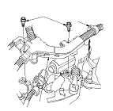
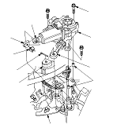

i-SHIFT Transmission Shift Change Actuator Replacement
NOTE: Use fender covers to avoid damaging painted surface.
Make sure you have the anti-theft code for audio. Disconnect the negative cable from the battery.
Remove the air cleaner housing.
Remove the engine harness cover (A) and the harness clip (B).

Disconnect the transmission shift change actuator connectors (A). Remove the cotter pin (B) and select wire washer (C).
Disconnect the select actuator rod (D) and shift actuator rod (E) with joint covers (F) from the change lever assembly (G).
Remove the transmission shift change actuator (H), then remove the dowel pins (I) from the top of the transmission housing.
Install the transmission shift change actuator in the reverse order of removal with the new cotter pin.
NOTE:
Be careful of assemble direction of joint cover.
Application of grease is not allowed at installation to the rods.
Install the select wire washer certainly.
Do the i-SHIFT system learning (static mode).
Test-drive the vehicle.
Enter the anti-theft code for the audio and set the clock.
Perform the power window control unit reset procedure.
